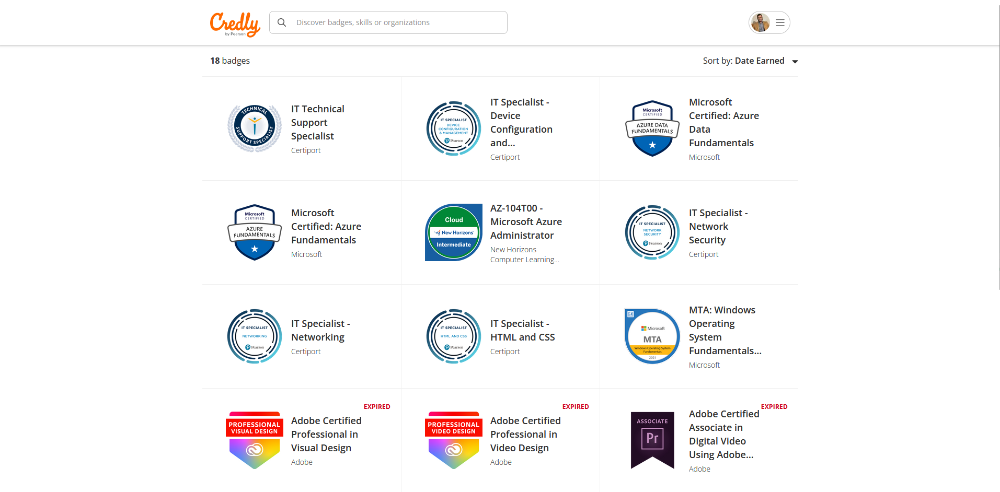
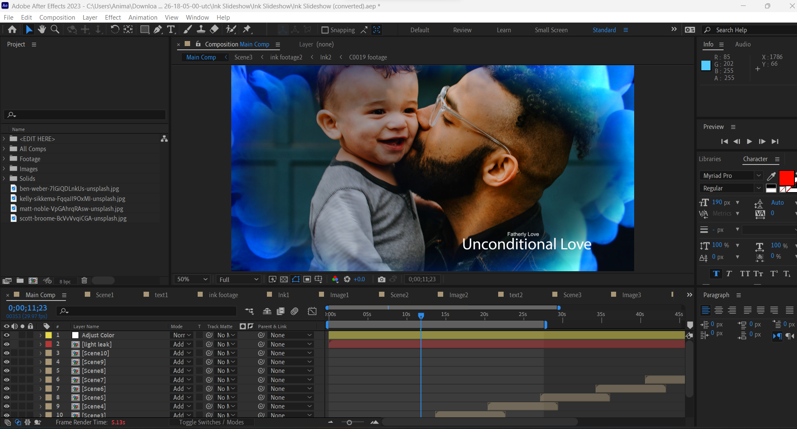
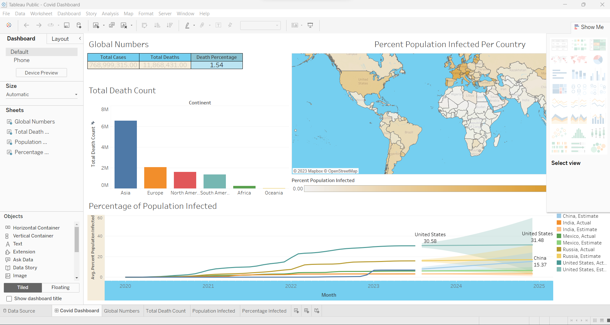
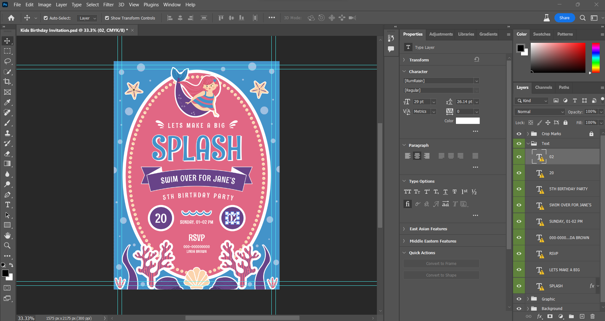
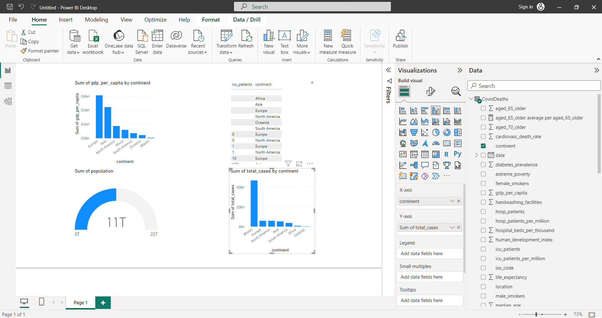
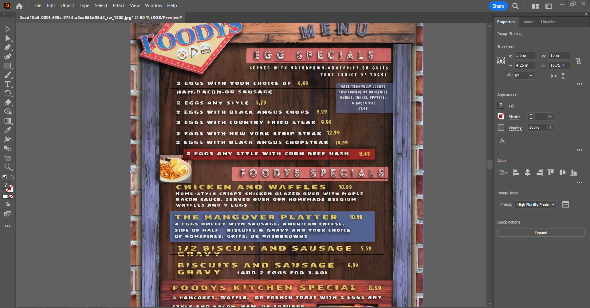

August 05, 2023
Credly is a comprehensive online platform that serves as a centralized hub for individuals to access and showcase their various
ertifications and knowledge badges. This platform enables users to compile a comprehensive list of their acquired credentials, ranging from professional certifications to specialized skills and achievements. Through Credly, one can create a digital portfolio that highlights their expertise and
accomplishments, making it convenient for employers, colleagues, and peers to gain insights into their skill set and qualifications.


I find that SSMS, which stands for SQL Server Management Studio, serves as an invaluable integrated environment for overseeing various aspects
of SQL infrastructure. Whenever I need to interact with, fine-tune, control, oversee, or even create components within SQL Server, Azure SQL Database, Azure SQL Managed Instance, SQL Server on Azure VM, and Azure Synapse Analytics, SSMS is my go-to tool.
Its versatility allows me to handle a multitude of tasks effortlessly.

Project Summary:

Project Summary: Bike Purchase Analysis based on Average Income. The Bike Data project aims to analyze
bike purchases using various metrics and their correlation with average income.
The project was implemented using Tableau, a powerful data visualization tool, to present the
insights in an interactive and visually appealing manner.

Project Summary: I undertook the creation of a wide range of graphic and video assets using various Adobe software programs.
The goal was to showcase my proficiency in these tools while producing high-quality and visually appealing content.
The project involved the following Media Programs: Adobe Illustrator, Adobe Photoshop, Adobe InDesign, Adobe After Effects, and Adobe Premiere Pro.

Project Summary:
The Bike Purchases Data Analysis project was aimed at analyzing and visualizing bike purchase data using Tableau.
The project involved exploring various metrics related to bike purchases, such as sales, customer demographics, income, and regional trends.
The goal was to provide insights that could guide business decisions and marketing strategies for the bike company.

Donec eget ex magna. Interdum et malesuada fames ac ante ipsum primis in faucibus. Pellentesque venenatis dolor imperdiet dolor mattis sagittis magna etiam.